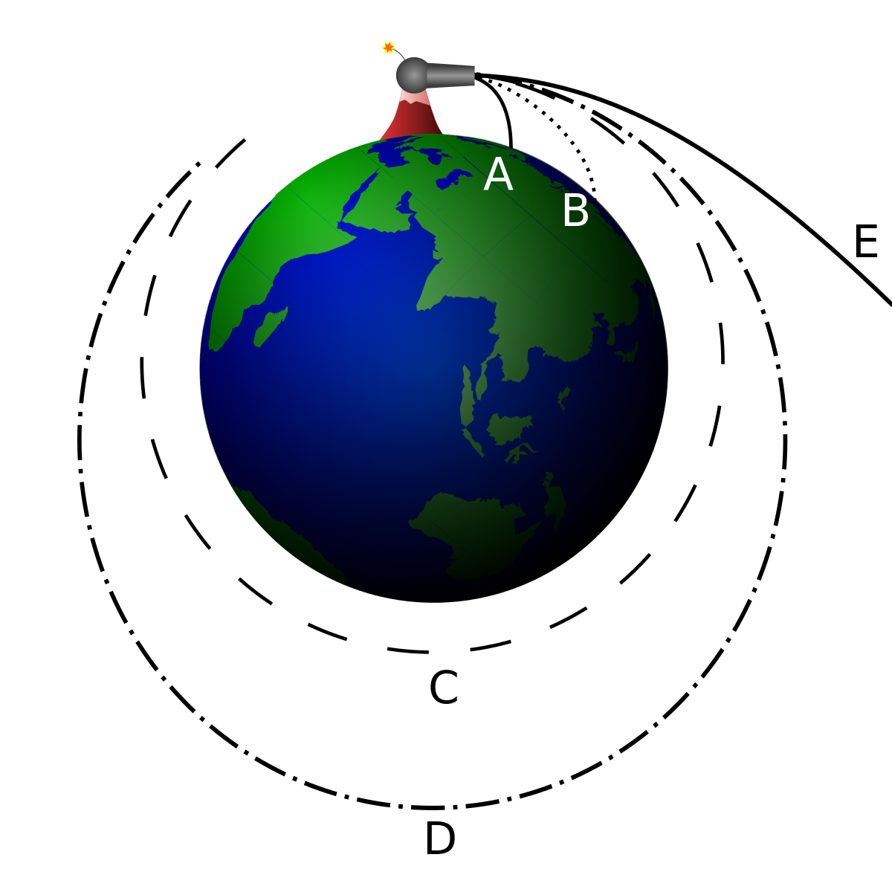

UnitTests with Jest - Basic
Super Fast Orbital Mechanics Intro
This is what most of us think happen!

Super Fast Orbital Mechanics Intro
This is what actually happen

Super Fast Orbital Mechanics Intro
How orbits work
Super Fast Orbital Mechanics Intro
Types of orbits
So why to test anyway?
Ariane 5
Ariane 5 T+00:39
...software exception was caused during execution of a data conversion from 64-bit floating point to 16-bit signed integer value...
...function was not tested under simulated Ariane 5 flight conditions, and the design error was not discovered.
Official Inquiry Board report
~500 USD bug!
Different types of tests
client
gateway
controller
service
DAL
DB
client
gateway
controller
service
DAL
DB
client
gateway
controller
service
DAL
DB
client
gateway
controller
service
DAL
DB
client
gateway
controller
service
DAL
DB
client
gateway
controller
service
DAL
DB
Jest All-in-One
- Assertion library
- Test runner
- CLI tool
- Coverage library
- Blazing fast


Installation
npm i -D jest @types/jest ts-jest typescript
npx ts-jest config:init
And that's it!
Running Tests
npx jest "<path to file or folder with wildcard"
or by
Installing VS code addon
Spec file structure
describe('test unit', () => {
beforeAll(() => {
// once before the unit
});
beforeEach(() => {
// once before every test
});
afterEach(() => {
// once after every test
});
afterAll(() => {
// once after the unit
});
});
Given, When, Then
Explicit is better than implicit.
it('should calculate 115USD for 100USD money and 15% tip', () => {
// given
expect.hasAssertions();
const calculator = new SimpleTipCalculator();
// when
const result = calculator.calc(100, 15);
// then
expect(result).toBe(115);
});
Given
Initial configurations for the tests
When
Test action
Then
One (or more) assertions
Before Each
describe('simple calculator', () => {
let calculator: SimpleTipCalculator;
beforeEach(() => {
calculator = new SimpleTipCalculator();
});
it('should calculate 115USD for 100USD money and 15% Tip', () => {
// given
expect.hasAssertions();
// when
const result = calculator.calc(100, 15);
// then
expect(result).toBe(115);
});
});
before / after
| beforeEach | - | runs before every test |
| afterEach | - | runs after every test |
| beforeAll | - | runs before all tests |
| afterAll | - | runs after all test |
Matchers
- Truthiness
- Numbers
- Numbers
- Strings
- Arrays and iterables
- Exceptions
Truthness Matchers
test('null', () => {
const n = null;
expect(n).toBeNull();
expect(n).toBeDefined();
expect(n).not.toBeUndefined();
expect(n).not.toBeTruthy();
expect(n).toBeFalsy();
});
Number Matchers
test('two plus two', () => {
const value = 2 + 2;
expect(value).toBeGreaterThan(3);
expect(value).toBeGreaterThanOrEqual(3.5);
expect(value).toBeLessThan(5);
expect(value).toBeLessThanOrEqual(4.5);
// toBe and toEqual are equivalent for numbers
expect(value).toBe(4);
expect(value).toEqual(4);
});
String Matchers
it('string matchers', () => {
const message = 'Hello World';
const greeting = 'hello world';
const phrase = 'JavaScript is awesome';
const name = 'Christoph';
expect('team').not.toMatch(/I/);
expect(name).toMatch(/stop/);
expect(message).toBe('Hello World');
expect(greeting).toMatch(/HELLO/i);
expect(phrase.startsWith('JavaScript')).toBe(true);
expect(phrase.endsWith('awesome')).toBe(true);
});
Array and Iterable Matchers
it('array and iterable matchers', () => {
const shoppingList = [
'diapers',
'kleenex',
'trash bags',
'paper towels',
'beer',
];
expect(shoppingList).toContain('beer');
expect(new Set(shoppingList)).toContain('diapers');
});
Exception Matchers
it('exception matchers', () => {
function compileAndroidCode() {
throw new Error('you are using the wrong JDK');
}
expect(() => compileAndroidCode()).toThrow();
expect(() => compileAndroidCode()).toThrow(Error);
expect(() => compileAndroidCode()).toThrow('you are using the wrong JDK');
expect(() => compileAndroidCode()).toThrow(/JDK/);
});
Asynchronous tests
it('should read data from file ', (done)=>{
// given
const fr = new FileReader();
//when
fr.onData('file-under-test.txt', (data)=>{
// then
expect(data).toBe('some data from file');
done();
})
});
Error Assertion with Asynchronous Code
it('should throw an error when reading a missing file', (done) => {
// given
const fr = new FileReader();
// when
fr.onError('missing-file.txt', (error) => {
// then
expect(error).toBeDefined();
expect(error.message).toBe('File not found');
done();
});
});
Asynchronous tests (async/await)
it('should read data from file ', async ()=>{
// given
const fr = new FileReader();
// when
const data = await fr.onData('file-under-test.txt');
// then
expect(data).toBe('some data from file');
});
Async testing for errors
it('should test for error', async ()=>{
// given
const unit = new UnitUnderTest();
// when
// then
await expect(unit.functionUnderTest.bind(unit, 'param')).rejects.toThrow();
await expect(unit.functionUnderTest.bind(unit, 'param')).rejects.toThrowError();
await expect(unit.functionUnderTest.bind(unit, 'param')).rejects.toThrow('error message');
});
Code kata (bouldering) 🥋
A form of rock climbing that is
performed on small rock formations or artificial rock walls without the use of ropes or
harnesses.
Boulder ZONE hold
Boulder TOP hold
Competition rules - register attempt
- Make count of every attempt (successfull or unsuccessful) to complete the boulder
- Mark on which attempt the zone has been reached
- Mark on which attempt the top has been reached
- Time is also an issue, but we'll leave it for now
Competition rules - Calculate winner
- Minimum attempts to reach the top gives top place
- If attempts till top are equal then the minimum number of zone attempts gives top place
- If both top attempts and zone attempts are equal then minimum total attempts count gives top place
- function should output top 3 places for competitors
TDD Bonus
- Write tests that check specific scenario
- Observe the test fail
- Write the minimum code needed for the test to pass
Implementation suggestion
export interface PlayerScore {
playerName: string;
tops: number;
zones: number;
zoneAttempts: number;
boulderAttemps: number;
}
export function setScore(playerScore: PlayerScore) {
}
export function calculateWinOrder(): string[] {
return [];
}